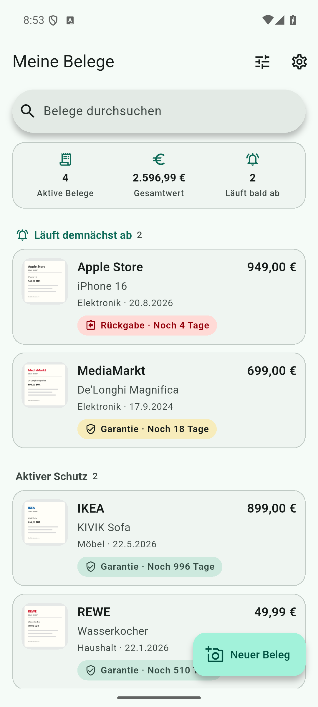

Im Fokus · Dokumente
BonSafe
Der Beleg, den du brauchst.
Genau da, wo er hingehört.
Kaufnachweise sammeln und Garantie- sowie Rückgabefristen im Blick behalten. Lokal auf deinem Gerät, ohne verpflichtendes App-Konto.
Unabhängige Apps für Android
Belege aufbewahren. Babyschlaf festhalten. Den Scooter in Schuss halten. Praktische Apps für die Dinge, die deinen Alltag ausmachen.
Apps entdeckenEntwickelt von Marc Neumann. Für konkrete Aufgaben.

Die Vardholt-Apps
Klare Werkzeuge für Familie, Dokumente,
Mobilität und Heimwerken.
Kaufnachweise sammeln und Garantie- sowie Rückgabefristen im Blick behalten. Lokal auf deinem Gerät, ohne verpflichtendes App-Konto.
 Familie
FamilieVom ersten Milchzahn bis zum Zahnwechsel: Halte die kleinen Meilensteine im Zahnschema fest.
 Familie
FamilieSchlaf und Alltag deines Babys im 24-Stunden-Protokoll. PDF-Protokolle mit Pro zum Teilen und Mitnehmen.
 Mobilität
MobilitätWartung, Kilometerstand, Akku und Reifendruck deines E-Scooters an einem Ort festhalten.
 Mobilität
MobilitätE-Scooter-Regeln für acht Länder nachschlagen: von erlaubten Wegen bis zu den wichtigsten Verkehrsregeln.
 Mobilität · Deutschland
Mobilität · DeutschlandDen jährlichen Wechsel des deutschen Versicherungskennzeichens im Blick behalten – mit Frist und Erinnerung.
 Heimwerken
HeimwerkenBetonmengen und Materialbedarf für dein nächstes Projekt berechnen. Vom Fundament bis zur Bodenplatte.
Verfügbarkeit, unterstützte Sprachen, Preise und In-App-Käufe findest du im jeweiligen Google-Play-Eintrag.
Hinter den Apps
Ich bin Marc, der Entwickler hinter Vardholt. Ich entwickle kleine, fokussierte Apps, mit denen du den Überblick behältst, Wichtiges festhältst und deinen Materialbedarf berechnest.
Ein klarer Zweck und eine verständliche Bedienung stehen im Mittelpunkt. Viele Aufgaben funktionieren direkt auf deinem Gerät. Den genauen Funktionsumfang und die Datenschutzinformationen findest du bei jeder App.
Kontakt & Support
Bei Fragen, Feedback oder einem Problem schreib mir.
App-Name und Android-Version helfen bei der Antwort.